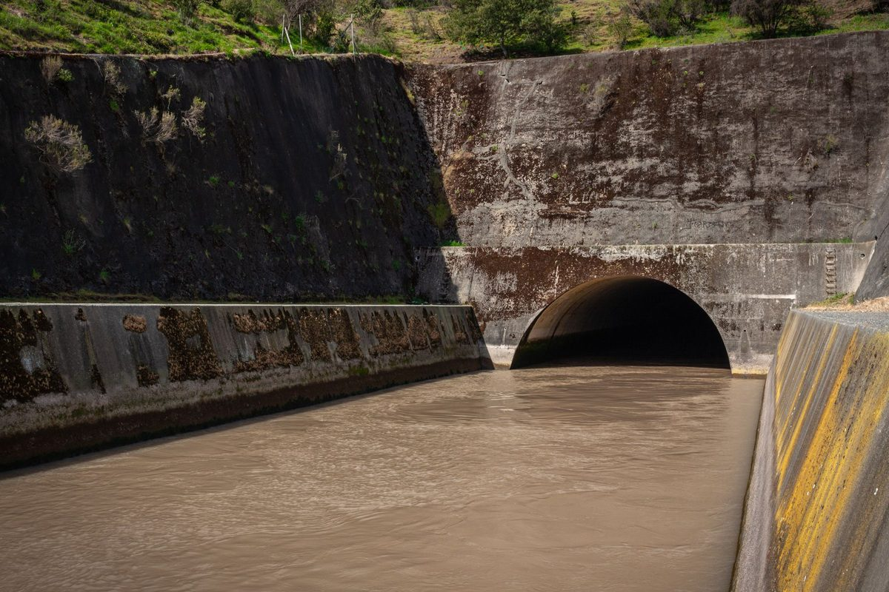

Projeto de Drenagem
Drenagem dimensionada com eficiência técnica e econômica, em conformidade com a legislação, para facilitar a aprovação e preservar ao máximo as áreas comercializáveis do seu empreendimento.
Seu projeto pronto em até 15 dias úteis

Análises técnicas relacionadas
+50 novos lotes em um loteamento no interior de SP
Fomos contratados para o projeto de infraestrutura de um loteamento cujo urbanístico, feito por terceiros, não previa espaço para a drenagem e destinava 20% da área permeável como área verde. A saída aparente era eliminar lotes. Identificamos uma faixa de servidão de alta tensão, correspondente a 10% da gleba, que havia sido descartada, e demonstramos a legalidade de computar metade dela como permeável. A área verde caiu para 10%, a drenagem ganhou espaço e o empreendimento ganhou 50 lotes.
Onde você vai colocar a drenagem? Essa resposta pode custar lotes
É comum o urbanístico chegar pronto sem espaço previsto para os dispositivos de drenagem. Na hora de encaixar reservatórios e estruturas, a solução mais fácil é eliminar lotes, e isso vira perda direta de VGV. Somam-se a isso redes que colidem com água e esgoto em campo e exigências técnicas que travam a aprovação.
Drenagem que protege a aprovação e o seu VGV
Projetamos a drenagem integrada ao urbanismo, à terraplenagem e às redes de saneamento, em um único modelo BIM. Com o conhecimento da legislação ambiental e municipal, buscamos a solução tecnicamente correta que preserve o máximo possível de área vendável.
O que você recebe
- Estudo e dimensionamento da rede de drenagem
- Microdrenagem: sarjetas, bocas de lobo, galerias e poços de visita
- Dispositivos de amortecimento e retenção, quando exigidos
- Compatibilização em BIM com redes de água e esgoto
- Memoriais e planilhas de cálculos para aprovação
- Atendimento às devolutivas do projeto até a aprovação
Benefícios
-
Mais lotes vendáveis
Soluções que evitam sacrificar área comercial.
-
Sem colisão em campo
Compatibilização com as redes de saneamento antes da obra.
-
Menos exigências
Projeto alinhado às diretrizes locais.
-
Prazo cumprido
Entregas e devolutivas no cronograma combinado.
Como funciona
- Você envia o urbanístico, a topografia/terraplenagem e o projeto de saneamento, se já tiver
- Retornamos com escopo, prazo e valor
- Desenvolvemos e entregamos o projeto integrado em BIM
- Revisamos conforme as devolutivas dos órgãos
Perguntas frequentes
Meu urbanístico já está pronto. Ainda dá para otimizar?
Muitas vezes, sim. Analisamos o projeto e indicamos oportunidades antes de finalizar o dimensionamento da drenagem.
Preciso contratar outros projetos junto?
Não. A drenagem pode ser contratada isoladamente.
Vocês respondem às exigências dos órgãos?
Sim, revisamos o projeto de acordo com as exigências dos órgãos.
Qual o prazo?
Depende da área e da complexidade da gleba. Geralmente em torno de 15 dias úteis.
Atendem quais regiões?
Elaboramos projetos para todo o Brasil, e somos especialistas em trâmites de aprovação no estado de São Paulo.
Antes de abrir mão de um lote, fale com a gente
- (19) 2218-3135
- contato@athomprojetos.com.br
- Av. Antônio Baptista Piva, 2718, Sala 5, Paulínia/SP
- Segunda a sexta, das 8h às 18h
Se precisar, também desenvolvemos os projetos de terraplenagem, água e esgoto do empreendimento.